상체 하중을 어깨 가교로
허리 중공 플랜지 → 흉부 스파인·좌우 기둥 → 어깨 가교로 연결했습니다. 제어 보드와 배선 블록은 내부 배치 예약 공간입니다.
5휠 베이스부터 허리·상체·양팔과 머리까지.
5휠 · 포켓 프레임 · 14S4P 배터리 · 5축 허리.
프레임·관절·양팔 7축·목 2축·하이브리드 손 구동과 촉각 면을 연결했습니다.
수평 치형 풀리의 관찰에서 전달계를 추정합니다.
모터·아이들러·출력축의 역할은 미확인입니다.
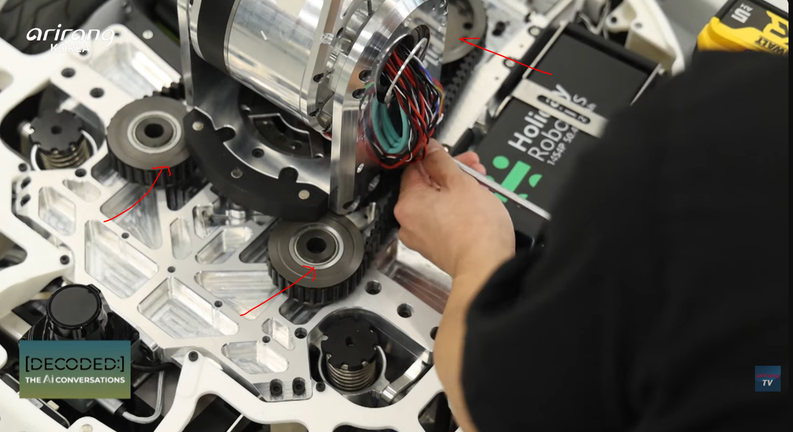
| 인터페이스 | 상세 후보 | 확인할 항목 |
|---|---|---|
| 출력 지지와 하중 경로 | 중공 Ø120 / 출력 피치원 약 Ø191 / 하부 고정 링–상부 회전 테이블 | 벨트는 토크 전달, 상체 중량·전도 모멘트는 별도 베어링으로 지지. 베어링 형식·수명 미선정. 초기 240×220 기초판은 45°에서 팩 예약과 중첩되어 Ø200 원형판·X140 지지판 후보로 변경했습니다. |
| 입력축·장력 조절 | Ø30 축 / 지지 간격 40 / 베어링 예약 2곳 / 아이들러 X ±6 슬롯 / 4×M5 클램프 | 표시 위치는 초기 슬롯 예약. 키·클램프·스플라인과 실제 베어링 선정 필요. |
| 고정·정비 | 상부 분리 가드·공구 접근·고정판 t10 후보 | 회전 케이블 서비스 루프, 끼임 방지, 장력 계측·재현성과 브레이크 고장 유지력 검증. |
토크는 중력 요 토크가 아니라 가감속·마찰·외력 검토용 입력입니다. 1.5배 계수·벨트 효율 95%·초기 장력을 가정합니다. 전동기 환산은 별도의 상위 감속기 20:1·효율85% 후보를 가정하며 실제 모터/감속기 형식은 미선정입니다. ΔT = M/R, T팽팽/느슨 = T0 ± ΔT/2. 벨트 강성·치형·허용 장력·피로·방향 반전·충격은 미포함이며 폭 변경만으로 허용 토크가 산출되지 않습니다. 축 응력은 Ø30·횡하중 상한·40 mm 모멘트암을 가정한 공칭치이며 키홈·피로 안전 판정이 아닙니다. 질량은 기존 허리 24 kg 예산 안의 재배치 가정입니다. Gates 전달계·축 하중 설계 참고 ↗
스프링·타이어 강성으로 수직 반력을 계산합니다.
사진의 캐스터–휠모터 연결부를 좌우 보기 링크로 해석합니다.
보기 연결을 끄면 이전 독립 캐스터 현가와 비교합니다. 좌우 링크는 각각 회전하며 후방 중앙 캐스터는 프레임에 별도 고정합니다. 캐스터 선회는 링크의 피벗 회전과 별개입니다.
위치는 구동휠→직진 캐스터 접지점 간 거리의 비율입니다. 47%·Z135는 검토값입니다. 높이는 형상만 바꾸며 1차 수직력 모델의 계수에는 들어가지 않습니다.
선회 오프셋은 전방 20·후방 16 mm 후보입니다. 선회각에 따라 휠 접촉점 XY와 지지 다각형을 갱신합니다. 선회 마찰·스크럽 토크는 미포함입니다.
타이어 강성과 마찰계수는 가정입니다. +X 전진 중의 구름저항 0.02mg를 포함해 구동 접선력 요구를 추산합니다. 등가 가속도는 하중 이동만 반영하며 시간응답·충격·휠 슬립 운동을 계산하지 않습니다.
보기 모드는 전체 코일 스트로크에서 회전하는 휠·포크의 전선회 예약 박스를 보수적으로 감쌉니다. 링크·모터·스트럿·배터리까지의 전체 가동 간섭 검증은 별도입니다. 독립 모드는 스프링 시트와 코일 포락도 포함합니다. 양수는 분리축 여유이며 최단 거리가 아닙니다. 중첩은 정밀 형상 검토가 필요한 상태이며 실제 충돌 확정이 아닙니다. 고정 가이드와의 간격은 아래 카메라 검토에 별도 표시합니다.
보기 모드의 코일 압축은 링크 회전과 연결됩니다. 독립 모드는 직렬 현가입니다.
| 바퀴 | 접촉점 X,Y / mm | 바닥 / mm | 수직 반력 / N | 현가 압축 / 한계 mm | 타이어 압축 / mm | 연결 현가 상태·스톱 반력 |
|---|
| 보기 | 피벗 XYZ / mm | 평지 대비 회전 | 코일 압축 | 코일 힘 | 스톱 / 반력 | 링크 모멘트 잔차 |
|---|
핀 Ø20·부시 Ø50·쌍측판 t9·모터 앞면 어댑터 t8은 형상 후보입니다. 실제 링크는 사진의 연결부를 근거로 추정했습니다. 강체 보기와 고정 수직 슬라이드를 동시에 강제하면 과구속되므로, 보기 모드에서는 고정 슬라이드를 제거하고 상·하단 각도를 허용하는 코일 스트럿 시트를 예약합니다. 그 시트 형식까지 사진에서 확인된 것은 아닙니다.
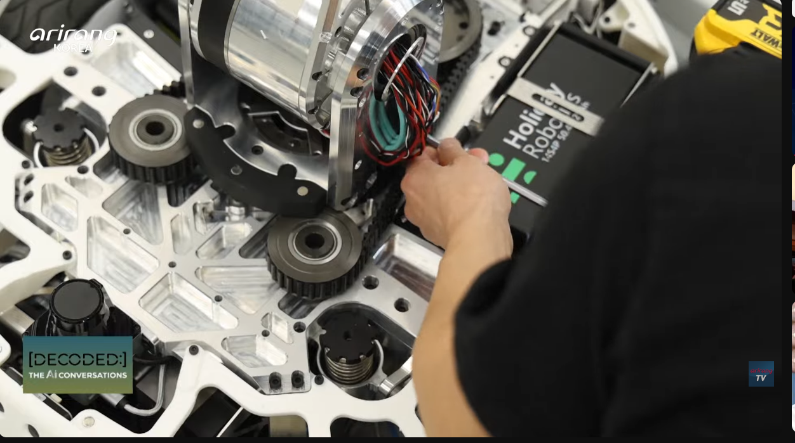
3D는 현재 질량·CG의 평지 정적 상태를 기준으로 차체를 고정하고 현가의 상대 변위를 보여줍니다. 보기 모드에서는 구동휠·휠모터·전방 캐스터에 동일한 강체 회전을 적용합니다. 좌표 표는 평지 공칭 좌표를 유지합니다. 차체의 들림·기울기는 위 측면 도식과 수치에서 확인합니다. 타이어는 변형량을 계산하지만 3D 원통 자체의 탄성 변형을 재현하지 않습니다. 기존 허리·팔 토크와 광학 시야는 기준 차체·평면을 사용합니다.
차체 하부 지지면 변위는 h + sx·x + sy·y, 수직 지지 힘은 0 이상입니다. 5개 지지부의 접촉/비접촉과 전방 두 현가의 리바운드 스톱/스프링/압축 스톱 조합을 열거해 힘·전후·좌우 모멘트 평형을 풉니다. 스트로크 끝단에서는 추가 하중이 기계식 스톱으로 전달되고, 리바운드 끝단에서는 예압의 일부가 내부 스톱으로 닫힙니다.
독립 비교 모드에서 전방의 총 수직 변형 = 현가 압축 + 타이어 압축. 보기 모드는 차체 3좌표와 좌우 링크 회전 2좌표를 함께 풉니다. 각 휠의 상대 수직 변위 = (접지점 X−피벗 X)/(스프링 시트 X−피벗 X) × (코일 압축−기준 돌출). ΣN·모멘트암 = 코일 힘·모멘트암 + 스톱 모멘트로 각 링크의 평형도 확인합니다. 코일 힘이 캐스터 반력과 같지는 않습니다. 링크·휠모터의 질량·관성은 별도 분리하지 않고 기존 총질량·CG 예산을 유지합니다. k = Gd⁴/(8Dm³Na), G=79,000 N/mm² 후보. 총 권수는 유효 권수+2, 밀착장은 총 권수×선경으로 근사합니다. Wahl 보정 전단응력은 참고 계산이며 수명 허용치는 정하지 않았습니다. 실제 제품의 허용 변위와 재질·가공·표면 상태를 별도로 확인해야 합니다. MISUMI 압축 스프링 기술자료 ↗
등가 하중점 X = CGx − ax·CGz/g. CG의 수평 좌표는 차체 기울기에 대해 고정하는 소각도 근사이며 차체 5°·보기 절대각 10°를 넘으면 경고합니다. 3D는 동일 강체 변환으로 축간거리를 유지하지만 접지 반력 계산은 1차 수직 근사이므로 큰 각도에서는 접지점 재계산이 필요합니다. 지면 기울기의 접촉 법선 변화·동적 관성·감쇠·피칭 시간응답·캐스터 선회 토크·전도 궤적은 계산하지 않습니다. 이 결과를 실제 FRIDAY의 요철 통과 성능이나 안전 성능으로 해석하지 않습니다.
원본 정면 사진 + 공식 영상 60.4초 대조.
코너 장착 방향을 반영하고 보정 전 각도를 명시합니다.
FOV·거리·내부 광학 위치는 제품 미선정 상태의 입력값입니다. 두 창의 겹치는 지면 영역을 실제 스테레오 유효 영역이나 주행 안전 검출 영역으로 해석하지 않습니다.
수평 요: 좌측 + / 우측 − · 월드 방향 단위벡터
| 창 | 등가 광학 중심 XYZ / mm | 요 / 하향 틸트 | 광축 방향 X, Y, Z | 광축 지면 교점 XY / mm |
|---|
이하 치수와 가공 기준은 이번 후보 설계입니다.
| 부위 | 후보 구조·치수 | 설계 판단 / 확인할 항목 |
|---|---|---|
| 프레임 고정판 | 6061-T6 후보 · 64 × 114 × t4 / 창당 4×M4 하부 t12 프레임 어댑터 예약 프레임 윗면 Z193 → 고정판 윗면 Z197 | 외장 커버에 센서 정렬 하중을 맡기지 않고 전방 가교에 고정. 나사 물림·도구 접근·국부 강성 검토 필요. |
| 각도 조정 브래킷 | 좌우 지지 귀 t4 / 중심 Y±50 / 피치 피벗 Ø8 / 반경 R24 조절부 광학 중심 기준 요·피치 변환 | 소프트웨어 보정 전에 각도를 조정·고정하는 수동 장착안. 동력 짐벌이 아니며 슬롯과 하드 스톱은 개념 형상. |
| 광학창·베젤 | 유효 개구 116 × 52 / 광학면 후퇴 6 mm 기본 개구 끝단: 광학 중심 Y±38 / Z±8 후보 | 후퇴 깊이 × tan(FOV/2)로 테두리 차폐 여유 검토. 투명 보호판의 굴절·반사·IR 투과 특성은 미반영. |
| 배선과 정비 | 뒤쪽 커넥터 공간 + R25 루프 + 클램프 예약 전면 베젤 분리·본체 후방 인출 후보 | 커넥터 삽입 길이·최소 굽힘 반경은 실제 선정품으로 확정. 전력선과의 이격·프레임 관통부 보호 필요. |
| 조립 기준·보정 | A: 프레임 고정면 / B: 전후 기준 / C: 좌우 기준 요 ±0.5°·피치 ±0.5° 조립 목표 후보 | 1 m에서 0.5°는 약 8.7 mm 방향 오차. 장착 후 실제 카메라 내·외부 파라미터 보정 필요. 이 수치는 요구 정밀도 제안. |
기존 좌표 X=L/2−35·Y±160에 새 브래킷을 넣으면 현재 캐스터 예약 외형과 겹칩니다. 초기 후보를 X=L/2−20·Y±130으로 수정해 정적 예약 간격을 확보했습니다. 이 위치는 제조사 실측이 아니라 이번 패키징 제안입니다. 위 비교 버튼으로 겹침을 재현할 수 있습니다. 간격은 두 방향성 직육면체의 분리축 여유이며 실제 최단 거리·공차·현가 스트로크·전체 부품 간섭을 보장하지 않습니다.
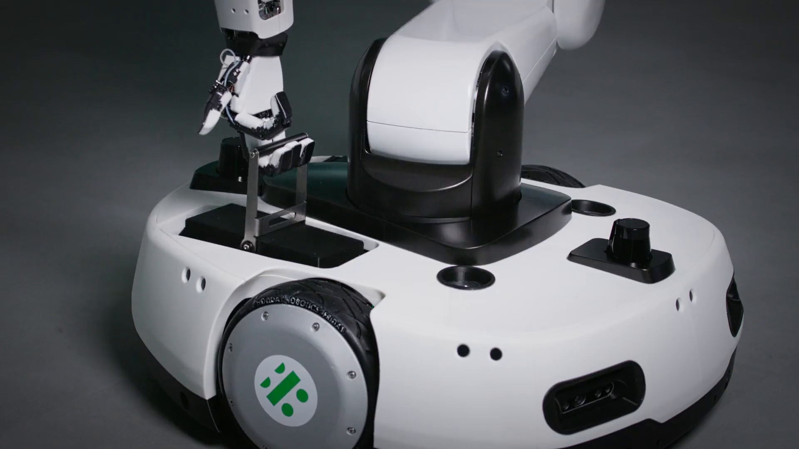
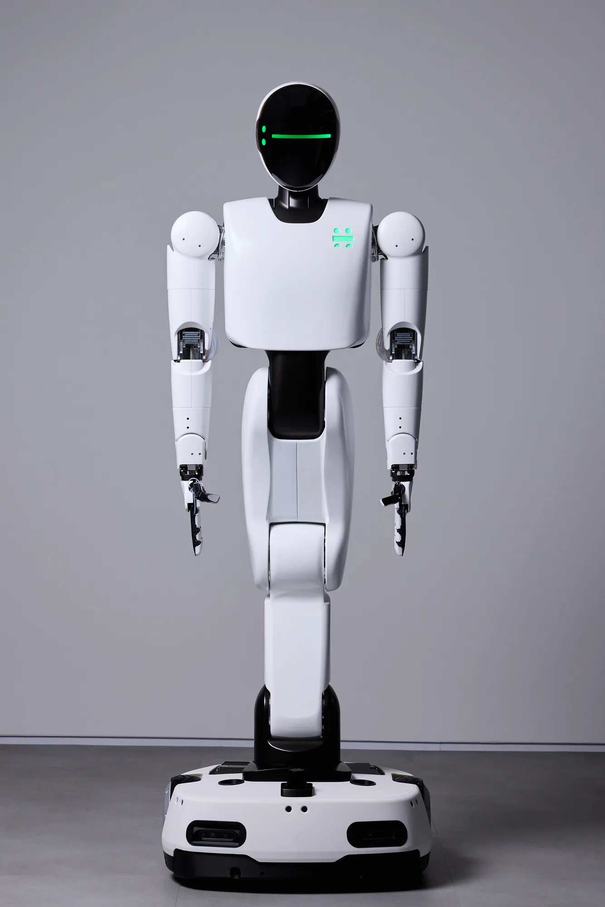
제조사 로봇 개인정보 처리방침은 전체 카메라 8대의 구성을 헤드 모노 2·어깨 모노 4·가슴 스테레오 1·모바일 스테레오 1로 명시합니다. 이 시스템 수와 외장 개구·렌즈 수는 구분합니다. 모델의 두 개구 내부 광학 형상은 식별용 실루엣이며 실제 제품 모델이나 모듈 수를 재현한 것은 아닙니다. 제조사 카메라 구성 설명 ↗
광학 좌표계는 +X 전방, +Y 수평 좌측, +Z 위. 자세 변환은 Rz(좌우 요)·Ry(하향 틸트)입니다. 지면 Z=0을 직사각 핀홀 시야의 네 평면과 광축 깊이 50 mm–입력 상한으로 절단합니다. 차체 중심선의 시야 시작은 최전단 X=L/2부터 25 mm 간격의 표본입니다. 단순 시야 겹침은 스테레오 보정·매칭·거리 오차를 계산하지 않습니다. 캐스터 현가·차체 피칭·조립 변형·창 반사와 실제 장애물 차폐는 별도 검증이 필요합니다.
제조사 2026.10.16 기술 글과 원본 사진에 근거.
구동 분담은 공개 사실, 회로·핀 좌표·수치는 후보 설계입니다.
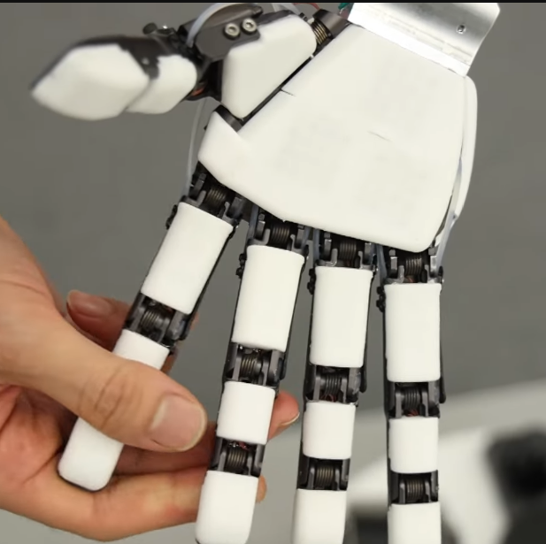
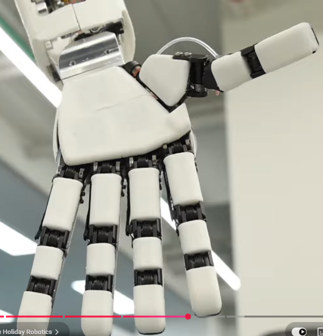
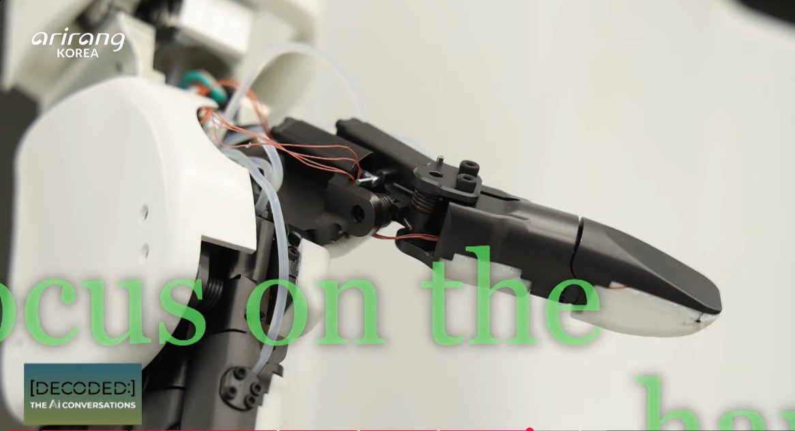
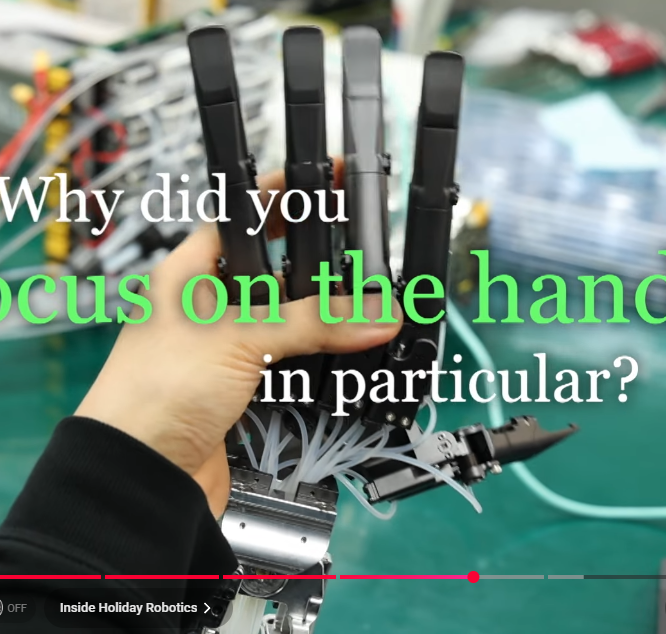
| 손 부품 | 상세 후보 | 검증 한계 |
|---|---|---|
| 단동 실린더 | 보어 Ø6/5.5/4, 외경 Ø9/8/7, 로드 Ø2 / 피스톤 t2, 가이드·씰 예약 | 단면 보기에서 스트로크에 따라 피스톤·로드를 함께 이동. 실제 씰 홈·재질·공차·표면 조도 미선정. |
| 관절 핀·부시 | 핀 Ø3 / 부시 길이3 / 지지 폭14 / 지름 틈새 0.01–0.04 mm 후보 | 이중 전단·핀 굽힘·부시 면압·유격 누적과 촉각 신호선 여유 검토 필요. |
| 중앙 복귀 코일 | 관절축 주변 코일·고정 다리·회전 다리를 표현 | 표시 코일은 외형 예약. 입력 토크–각도 법칙과 실제 선경·권수·예각·피로는 연결되지 않은 상태. |
| 배관·접촉 패드 | 손등 포트 → 근위 링크 클램프 → 관절 서비스 루프 → 손목 / 패드 t3 후보 | 호스 최소 굽힘 반경15 mm 목표는 제품 선정 전. 사진의 흰 표면에서 센서 내부 구성은 판별 불가. |
좌우 손은 이 공통 설계의 대칭 형상입니다. 두 손 40축을 각각 독립 제어하는 로봇 제어기는 구현하지 않습니다.
손끝의 현재 촉각 면에 수직으로 반력이 작용한다고 가정합니다. 마찰·다중 접촉·중력·손가락 자체 관성은 포함하지 않습니다. 제조사의 2 kg 시험과 자세·하중 조건이 같다는 뜻이 아닙니다.
이 입력은 비압축 이상 유체의 체적 보존으로 해당 손등 실린더의 변위와 관절각을 풉니다. 하중에서 추가로 필요한 압축 체적은 아래 표에 별도 계산합니다.
원주응력은 내압 원통의 Lamé 식으로 구한 공칭 응력이며 포트·홈의 응력집중은 제외합니다. 핀·부시 값은 선택 손가락 한 관절의 실린더 힘만 사용한 예비치입니다. 소재·허용응력·수명 판정은 하지 않습니다.
상체의 모터–스크루–주실린더는 독립 체적 구동을 검토하기 위해 선택한 회로 가설입니다. 실제 FRIDAY의 펌프·밸브·변위원 배열은 공개 자료에서 확정하지 못했습니다. 씰·포트·압력 센서와 주입/에어빼기 위치는 설계 예약이며 역구동·정전 상태는 검증 전입니다.
부호가 음수인 요구 힘은 단동 유압으로 유지할 수 없는 조건
| 축 / 각도 | 실린더 길이·스트로크 / mm | 유효 모멘트암 / mm | 부하 / 스프링 / N·m | 실린더 힘 / N | 실린더 / 공급 압력 / MPa | 주실린더 이상 / 압축 반영 / mm | 모터축 토크 / N·m | 무부하 복귀 추산 / s |
|---|
외력 토크는 손끝 자코비안의 전치로 구합니다. 실린더 모멘트암 r=dℓ/dθ, F=(τ부하+τ스프링)/(ηr)+F씰, p=F/A. 주실린더 변위는 (A손·s + V선로·p/B유효)/A주입니다. 호스 손실은 원형 관의 층류식 Δp=128μLQ/(πd⁴)를 사용합니다. 관절 핀 좌표·마찰·유효 탄성률은 가정이며, 기포·피팅 손실·누설·유체 과도응답·모터/실린더 자체 간섭·파열·피로는 검증하지 않았습니다. 복귀 시간은 외부 접촉이 해제되고 주실린더가 저항 없이 후퇴한다는 준정적 하한 추산입니다.
상체 질량 모델의 손당 0.5 kg와 연결한 목표 배분
| 부위 | 가정 질량 / g |
|---|
CAD 체적 계산이나 실제 구매 부품 합계가 아닙니다. 특히 미세 실린더 씰·핀·팜 모터와 호스 어셈블리의 실측 질량이 필요합니다.
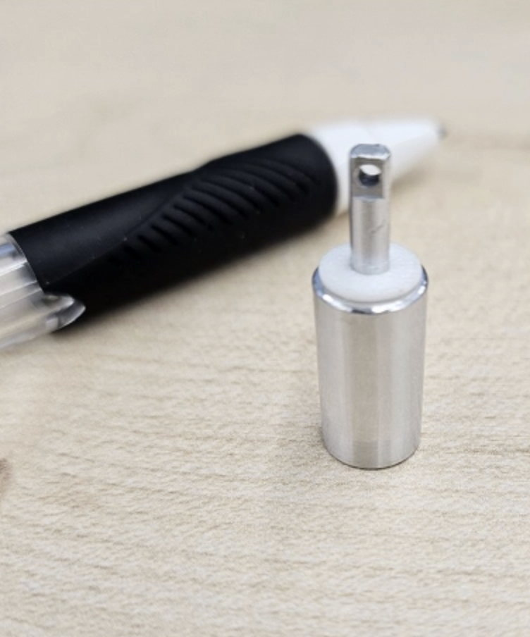
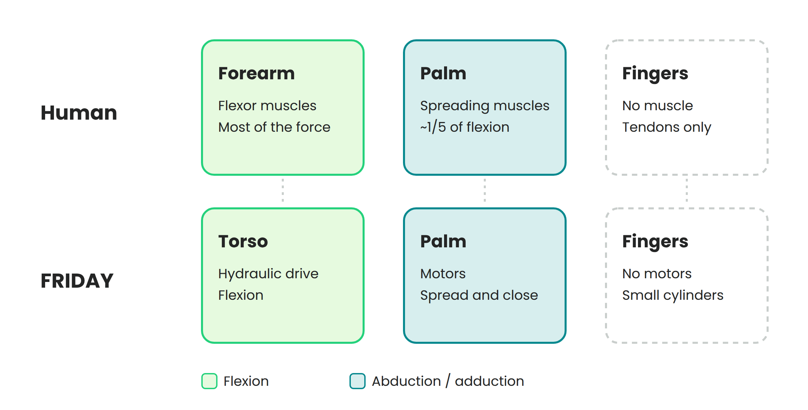
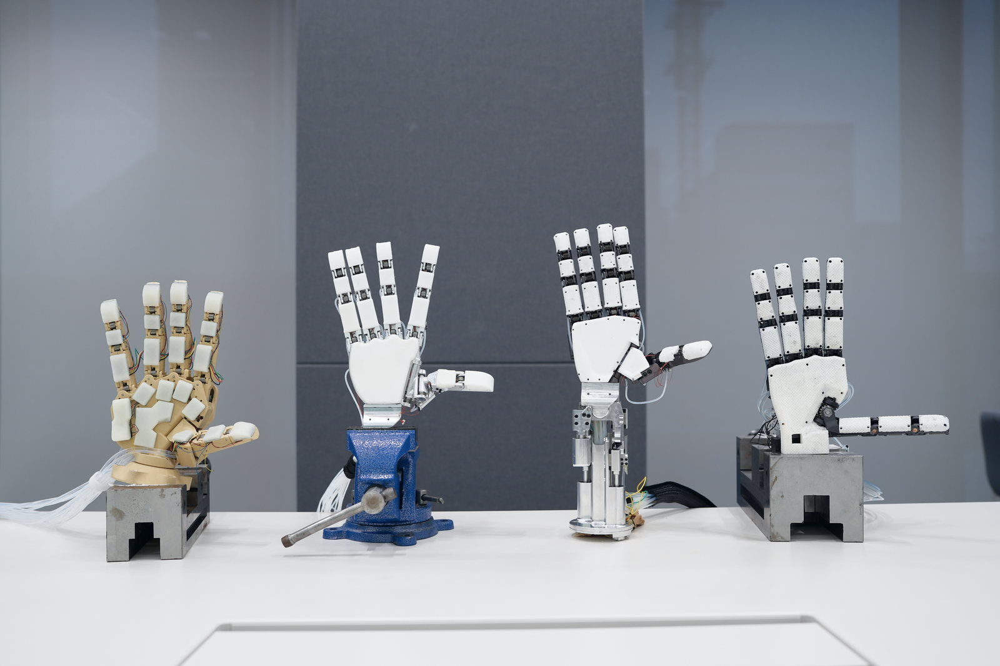
사진은 서로 다른 세대입니다. 최신 외형·내부 치수·회로가 모두 동일하다고 가정하지 않습니다. © Holiday Robotics
기준: 베이스 전방 +X · 로봇 좌측 +Y · 상방 +Z.
화면 오른쪽을 로봇 후방으로 해석한 기존 배치를 철회했습니다.
공식 제품 영상 60.4초 / 전방 광학창과 좌측 구동휠을 기준으로 로봇 좌측을 판독했습니다.
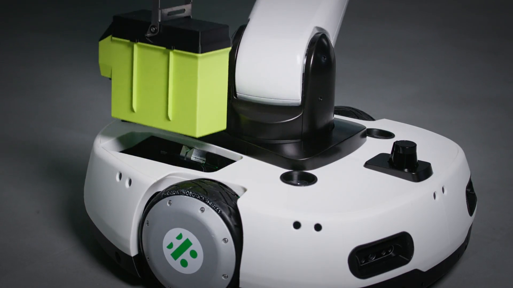
62초 / 배터리는 옆으로 미끄러지는 방식이 아니라 상방으로 빠집니다. © Holiday Robotics
제조사 원본 영상 ↗2팩·원격 유압 구동의 공식 설명 ↗좌측은 원본 교체 장면으로 판독했습니다. 두 번째 팩의 우측 대칭 배치는 황토색 반투명으로 구분합니다. 인출 슬라이더는 기하 미리보기이며 CG는 장착 상태를 사용합니다. 체크를 끄면 팩이 로봇 밖으로 제거된 조건으로 질량·CG를 계산합니다. 로봇 손에 든 팩·튜브 힘·커넥터 인출력은 계산하지 않습니다.
AMR 76 kg에는 팩 2개가 포함된 것으로 가정합니다. 팩 질량을 바꾸면 나머지 AMR 질량을 조정해 완전 장착 총량을 유지합니다. 14S4P는 원본의 해당 팩 표기이며, 현행 두 팩의 셀 화학계·Ah·Wh·전압·회로를 확정하는 근거로 쓰지 않습니다.
공식 초기 사양: 팔당 7축 · 머리 2축.
내부 프레임·축 순서·링크 길이는 사진 해석에 따른 설계안입니다.
A1–A3 어깨 Y–X–Z, A4 팔꿈치 Y, A5 전완 Z, A6–A7 손목 Y–X는 등가 기구 가설입니다. 가동 범위와 구동기 배열을 실차 확인값으로 해석하지 않습니다.
허리 중공 플랜지 → 흉부 스파인·좌우 기둥 → 어깨 가교로 연결했습니다. 제어 보드와 배선 블록은 내부 배치 예약 공간입니다.
상완·전완 리브, 관절 출력 플랜지와 손목 인터페이스를 구현했습니다. 이 축간 치수와 소재·판두께는 실측 전 후보값입니다.
타원형 검은 전면·녹색 표시·목 2축과 5지 손 형상을 추가했습니다. 상체 원격 유압 구동 공간과 팔 배관을 추가했습니다. 손등 단동 실린더·스프링 복귀·팜 모터를 추가했습니다. 회로·축 배분·치수는 제안값이며 촉각 센서 내부는 미확인입니다.
상체 질량은 흉부 43.2%·머리 8.8%·팔당 22%·손당 2%로 가정합니다. 상체 25 kg일 때 흉부 10.8·머리 2.2·팔 5.5×2·손 0.5×2 kg입니다. 실측 BOM이 아니며, 적재는 아래에서 양손 분담 또는 허리 기준 등가점으로 선택합니다.
현재 자세 · 중력만 반영 · 제안 질량 분포
작업영역은 팔당 480개 각도 조합의 손목 표본입니다. 기구 범위 가설에 대한 위치 분포이며, 자체 간섭·주변 장애물·하중·특이점을 제외하지 않았습니다. 채워진 영역 전체의 도달을 보장하지 않습니다.
| 축 | 자중 / N·m | 적재 / N·m | |합계| / N·m | 계수 적용 출력 / N·m | 가정 감속비 | 모터축 환산 / N·m |
|---|
부호는 각 국부 양의 회전축 기준입니다. 출력 검토값 = |자중 + 적재| × 검토계수, 모터축 환산 = 출력 / (감속비 × 효율). 마찰·가속도·충격·열평형·감속기 역효율은 미포함입니다. 모터 연속/피크 정격과 브레이크 선정값은 아닙니다. 어깨 반력은 전체 팔 하중의 합력·모멘트이며 개별 베어링 하중이 아닙니다.
| 축 | 현재 예약 외형 | 공통 가정 감속비 | 구조 상세화·확인 항목 |
|---|
제조사 액추에이터의 실측 외형이나 구매 사양이 아닙니다. 현재 모델의 공간 예약값이며, 이 체적 안에 구동기·베어링·브레이크가 모두 들어간다고 검증하지 않았습니다. 입력 감속비는 좌우 공통으로 적용합니다.
14개 등가 회전축 · 축간 거리와 동축 표현은 설계 가정
| 관절 | 역할 / 국부 축 | 현재 각도 | 중심 XYZ / mm |
|---|
공식 초기 사양: 허리 5 DoF · 24 kg.
기초 요 + 3피치 + 롤의 축 순서가 기본 가설이며 상단 요 비교안도 남깁니다.
AMR 76 + 허리 24 + 상체 25 = 125 kg는 분석용 분할 가정입니다. 초기 115 kg 버전의 모듈 질량을 현재 실차값으로 간주하지 않습니다.
총 적재를 상체 패널에서 좌우 손으로 분담합니다. 손 자세와 하중점 이동이 팔·허리 토크 및 전체 CG에 반영됩니다. 허리 기준 등가점 모드에서는 +X 지정 거리·+Z 150 mm를 사용하며 팔 토크에는 적재를 넣지 않습니다.
현재 자세의 중력만 반영 · 속도/가속도·마찰·충격 미포함
| 관절 / 축 | 검토 각도 | 중심 XYZ / mm | |중력 토크| / N·m | ×1.5 검토값 / N·m | 근거 |
|---|
×1.5는 예비 정적 검토계수입니다. 연속·피크 모터 정격이나 브레이크 정격이 아닙니다. 지지 여유는 평지·정지·현재 캐스터 방향의 접지점 가정에 대한 기하학적 값이며, 현가 강성과 각 휠의 실제 반력·동적 전도는 별도 해석이 필요합니다.
실측 전 예비 구조 설계.
재료·판두께·축경·볼트 패턴은 제작 검토용 후보입니다.
측면 주 리브·삼각 가교 → 중앙 t20 베이스 플레이트 → J1 좌우 지지판으로 상체 하중을 전달합니다. 후방 가교는 배터리 아래로 내려 팩 체적과 분리했습니다.
J1·J2를 좌우 지지하고, 감속기 출력 플랜지·지지 베어링·브레이크 공간을 분리해 표현했습니다. 액추에이터 외형은 실제 구매 모델을 특정하지 않은 예약 형상입니다.
좌측 팩 아래 t6 트레이·수직 가이드·하부 접점 예약부·접이식 인출 손잡이를 배치했습니다. 링크 안쪽 하니스 고정점과 가동부 여유 경로를 예약했습니다.
| 부품군 | 예비 형상·인터페이스 | 소재·가공 후보 | 후속 검증 |
|---|---|---|---|
| AMR 주 프레임 | 주 리브 t12 / 삼각 가교 / 상체 기초 t20 | 6061-T6 · CNC 포켓 가공 | 접합 강성·뒤틀림·가공 기준면 |
| 캐스터 현가 2조 | Ø75 휠 / 노출 코일 / 검은 캡 / 가이드 | 가공 지지부 + 교체형 선회 캐스터 | 스프링 강성·예압·유효 스트로크 |
| J1 기초·지지판 | 벨트안: Ø200 × t20 / 4×M10 PCD170 / U자 지지판 X140 후보 | 알루미늄 기초 + 강재 축 후보 | 체결 미끄럼·축/베어링 하중 |
| J1 / J2 출력 플랜지 | Ø150 / Ø130 · 중공 Ø50 / Ø40 | 감속기·지지 베어링 분리 구성 후보 | 백래시·굽힘·피로·브레이크 유지력 |
| 하부 / 상부 링크 | 축간 360 / 300 · 측판 t10 | 6061-T6 양측판 + 가로 리브 | 처짐·좌굴·자체 간섭·공차 스택 |
| 상체 인터페이스 / 기초 요 비교 | 외경 Ø170 / 중공 Ø60 / 8×M8 PCD130 | 가공 플랜지 + 중공 베어링 후보 | 상체 하중·배선 통과·회전 한계 |
| 배터리 체결부 | 230 × 80 × 150 팩 추정 / 좌측 +Y / 수직 인출 | 알루미늄 트레이·수직 가이드·하부 커넥터 예약 | 실제 팩 크기·인출 경로·접속부 |
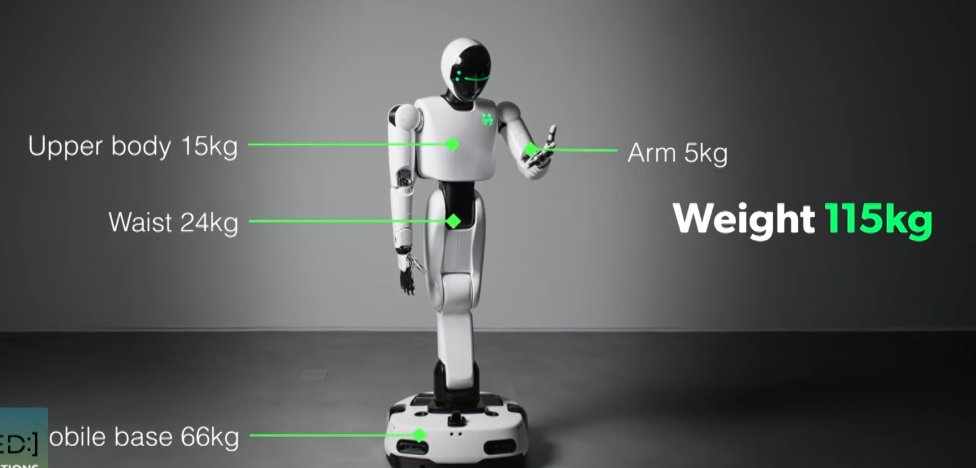
공식 영상 설명에서 허리 5 DoF·24 kg를 직접 확인했습니다. 이번에는 제조사 제품 페이지의 MP4 원본을 확인하고 60.4–62초의 배터리 교체 프레임을 추가했습니다. YouTube 재생 실패와 구분합니다. 3피치·롤·요 순서와 모든 내부 치수는 위 사진·스틸을 바탕으로 만든 설계안입니다.
공식 초기 영상과 설명 ↗현재 공식 제품 사양 ↗원본의 검은 팩 → 로봇 좌측 14S4P 배터리와 은색 고정대.
검은 캡·노출 코일 2곳 → 전방 좌우 현가 캐스터.
5휠은 설계 기준으로 적용, 후방 중앙 휠의 위치는 추정.
변경값은 이 브라우저에 저장됩니다.
제조사 사양을 바꾸는 기능이 아닙니다.
축 정렬·동적 변형·케이블·캐스터 실제 접촉 위치는 미포함. 체결부는 후보 형상이며 강도·피로 검증 전입니다.
후방 중앙 휠까지 포함한 평지·좌우대칭 정역학.
피벗·무게중심·예압의 추정값을 바꿔 검토합니다.
피벗 위치는 구동휠 → 캐스터 방향의 비율입니다. 스프링의 피벗 기준 모멘트암 r = 60 mm를 가정합니다.
구동휠–피벗 거리 a, 피벗–캐스터 거리 b, 후방 접지점 x5, 무게중심 xG, 총중량 W, 보기 1조 분담하중 P, 구동휠 쪽으로 작용하는 스프링 모멘트 M = F·r를 가정합니다. P = [W·(xG − x5) + 2F·r] / [2(a − x5)], N5 = W − 2P, Ndrive = [P·b + F·r] / (a+b), Ncaster = P − Ndrive. 스프링 예압은 총하중을 추가하는 것이 아니라 두 접지점 사이의 하중을 재분배합니다. Ndrive·Ncaster·N5 중 하나라도 0 이하이면 5점 접촉 가정이 깨지므로 해당 해석은 성립하지 않으며, 그 이후의 접촉 전환은 계산하지 않습니다.
평면 강체 모델의 개념 계산.
회전 관성·캐스터 스크럽·단차 저항은 후속 반영.
n = 60v / (πD), F = m[a + g sin(θ) + Crr·g cos(θ)], T = F·D / 4 × 1.5, P = T·v / (D/2). D는 m 단위. 좌우 휠이 동일한 구동력을 분담한다고 가정합니다. 기본 135 kg는 분석용 분할 질량 125 kg와 등가 적재 10 kg의 합이며, 제조사의 허용 적재 조건을 의미하지 않습니다. 출력은 이론 운전점이며 모터의 연속 정격·열적 성능을 확정하지 않습니다.
원점: 지면상의 베이스 중심
+X 전방 · +Y 좌측 · +Z 상방 / mm
| 번호 / 부품 | 수량 | 중심 좌표 X, Y, Z | 외형 예약 공간 | 근거 수준 |
|---|
원본 사진 위의 번호를 누르면 관찰 내용을 볼 수 있습니다.
이미지는 재생성하거나 숨은 부품을 덧그리지 않았습니다.
검은 캡 아래 노출 코일 2곳, 포켓 가공 프레임, 14S4P 배터리와 은색 가로 고정대.
두 현가 캐스터와 구동휠–캐스터 보기 링크를 형상에 적용했습니다. 총 5휠은 사용자 지정 설계 기준입니다.
후방 중앙 휠의 정확한 위치·장착부, 보기 피벗, 별도 구동륜 예압 스프링, 배터리 셀 형식·용량.
이 내부 화면의 촬영일과 하드웨어 리비전은 확인되지 않았습니다. 현재 제품 사진·사양과 동일 리비전이라고 가정하지 않습니다. 아리랑 공식 아카이브에는 Holiday Robotics 편이 2025.12.22자로 올라와 있으나, 첨부 프레임과 해당 편의 일치 여부는 미검증입니다. 프로그램 아카이브 ↗
전방 검은 창 두 곳에 광학 모듈 형태가 보입니다. 상판 중앙 돌출부는 LiDAR 후보로 해석했습니다. 제품명·시야각·안전등급은 식별하지 못했습니다.
*최대 페이로드의 자세·분담 조건은 제품 페이지에 설명되지 않았습니다.
공식 제품 페이지 ↗초기 버전은 총중량 115 kg·63 DoF이며 현재 125 kg·64 DoF와 구분합니다. 2 DoF는 전체 바퀴 수나 차동구동을 확정하는 근거가 아닙니다. 좌우 구동휠 2개는 이번 배치의 검토 가설입니다.
폭 600 mm는 정면 사진의 비례로 잡은 초기 추정입니다. 길이 650 mm, Ø200 구동휠, 두 현가부의 좌표, 배터리 공간과 센서 배치는 모두 가정입니다. 원근·자세 오차를 포함하며 제작 치수로 사용할 수 없습니다.
KIPRIS 국내 특허·실용신안 검색에서 등록특허 2건을 확인했습니다. 출원인과 최종권리자는 모두 주식회사 홀리데이로보틱스입니다. 두 건은 시뮬레이션 기술이며, 이번 AMR 주행부의 휠·캐스터 구조를 직접 뒷받침하는 자료는 확인하지 못했습니다.
일반 웹·Google Patents 검색에서는 회사명과 상표 자료가 주로 나타났습니다. KIPRIS에서 ‘홀리데이로보틱스’로 직접 검색한 결과 국내 특허·실용신안 2건이 확인되었습니다. 미공개 출원이나 다른 명의의 권리까지 모두 없다고 판단하는 결과는 아닙니다.
FRIDAY 출원번호 40-2025-0157370 / 40-2025-0157371은 상표로 구분합니다. 이를 주행부 기술특허로 인용하지 않았습니다.
KIPRIS에서 출원번호로 재조회 ↗관찰 내용을 늘리고, 가정을 하나씩 좁혀갑니다.
확정되지 않은 접지점을 먼저 고정하지 않습니다.
사진의 전방 캐스터–휠모터 연결부를 좌우 보기 링크로 적용했습니다. 각 링크의 모터·구동휠·캐스터가 함께 회전합니다. 정확한 피벗·스프링 시트와 좌우 연결 유무는 후속 확인 대상입니다.
다음: 측면·하부 영상의 연결축 추적총 5휠을 설계 기준으로 채택했습니다. 후방 좌우 캐스터 2개 대신 후방 중앙 캐스터 1개를 적용했습니다. 정확한 장착 위치·지지대 형상은 설계 추정입니다.
다음: 후방 저각도·선회 장면보이는 캐스터 쪽 스프링과 별도의 구동륜 예압 장치를 구분해야 합니다. 예압력만으로 접지하중을 정하지 않고 레버비·분담하중·접촉 상실을 함께 봅니다.
다음: 스프링 장착점·스트로크 확인사진 오른쪽을 로봇 후방으로 해석한 기존 배치를 철회했습니다. 공식 영상의 좌측 슬롯·위쪽 교체 방향을 반영했습니다. 라벨의 56셀 구성과 추정 팩 외형·하부 캐스터 공간을 구분합니다.
다음: 배터리 바닥 높이·슬롯 단면